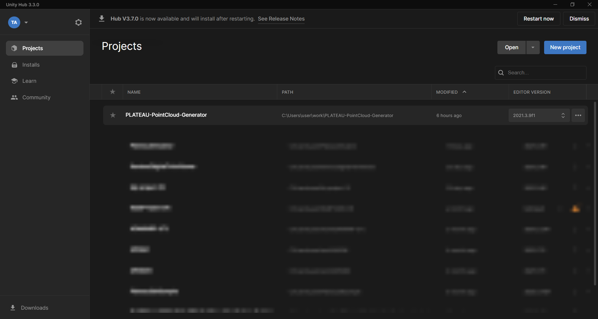
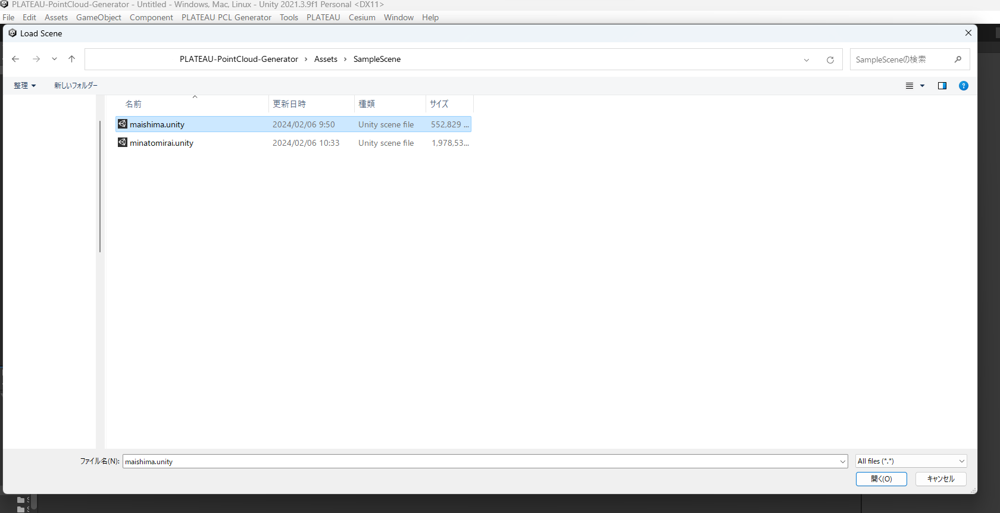
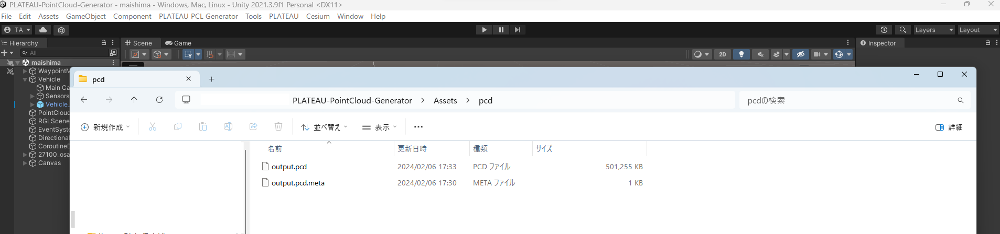
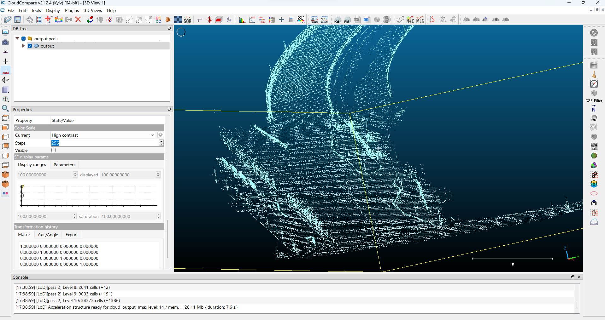

サンプルシーン実行手順
1. サンプルシーンを開く
プロジェクトから
maishima.unityシーンを開きます。サンプルシーンは大阪府大阪市舞洲地区の3D都市モデルを配置した
maishima.unityと神奈川県横浜市みなとみらい地区を配置したminatomirai.unityシーンの2つのサンプルシーンを用意しています。サンプルシーンに配置したモデルには、テクスチャを含んでいません。（githubへのアップロード容量制限のため）
UnityHubにてプロジェクトを開きます。 
Assets/SampleScene内のmaishima.unityを開きます。 サンプルシーンを開いた画面

2. 仮想車両の走行
UnityシーンのPlayボタンを押すと、仮想車両が走行を開始します。
サンプルシーンには予めルートを設定しています。

サンプルシーン走行の様子

3. 点群マップ出力
- 走行終了後、
Assets/pcdフォルダに点群マップが出力されます。 
4. 点群マップの確認
- CloudCompareなどの点群ビュワーソフトを利用し、点群マップを確認します。 